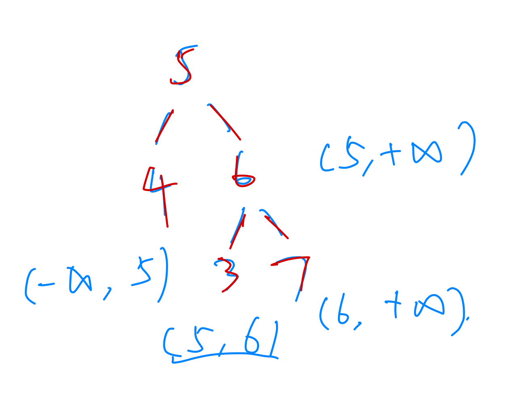

很绕
1 2 3 4 5 6 7 8 9 10 11 12 13 14 15 16 17 18 19 20 21 22 23 24 class Solution {public :int sum=0 ;bool isLeaves (TreeNode* root) if (!root->left && !root->right) return true ;else return false ;void sumLeaves (TreeNode* root) if (root->left){if (isLeaves (root->left)) sum+=root->left->val;sumLeaves (root->left);if (root->right) sumLeaves (root->right);int sumOfLeftLeaves (TreeNode* root) sumLeaves (root);return sum;
332.重新安排行程 基本做出来了，但是由于没考虑到目的地可能重复，自己觉得目的地只有一个，最终不知道错在哪里
去重
第15题. 三数之和 ，想不到排序后双指针。问题的关键是三元组内的元素可用重复，但是三元组这个整体不能再次重复。用set<set<>>哈希法记录组合会有几个超时例。关注解法中对a的去重，结果集是i和i右边的某两个元素，组内可以重复，nums[i]!=nums[i-1]是为了避免上一次范围覆盖这一次，nums[i]是每次迭代保证三元组不会重复的关键，因为可用范围是一直在缩小的。
1 2 3 4 5 6 7 8 9 10 11 12 13 14 15 16 17 18 19 20 21 22 23 24 25 26 27 28 29 30 31 32 33 34 class Solution {public :int >> threeSum (vector<int >& nums) {sort (nums.begin (),nums.end ());int >> res;for (int i=0 ;i<nums.size ();i++){if (i>0 && nums[i]==nums[i-1 ]) continue ;int left=i+1 ,right=nums.size ()-1 ;while (left<right){if (nums[left]+nums[right]+nums[i]>0 ) right--;else if (nums[left]+nums[right]+nums[i]<0 ) left++;else {push_back (vector<int >{nums[i],nums[left],nums[right]});while (left<nums.size () && nums[left]==nums[left-1 ]) left++;while (right>0 && nums[right]==nums[right+1 ]) right--;return res;
相关问题 第18题. 四数之和 ，注意给的数不超过int,相加之后可能会超过int,但是target是int,所有只要比较的时候加long强转就可以了,后续不需要加。哪里溢出就先只在那个地方上调，而不要从源头就自上而下都上调
注意双指针的问题一般都是用while(left<right)解决，而不要用for,for循环不好掌控
40.组合总和II ，完全想不到用used数组，used[i]=true表示同一树枝上v[i]用过，很好理解，因为往下层递归的时候会先标记用过。sort之后used[i]=false表示同一树层上v[i]用过 ，比较难想到。可以看图想，每个树层每次是从[i,)区间选的，前一个数用过之后used就会复原成false。因此排序之后v[i-1]==v[i]表示和前一个数字一样，且used[i-1]==false复原了，说明同一树层用过了，那么就跳过。如果少used[i-1]==false条件，就会在树枝层面也进行去重，[1,1,6]就会被去掉。其实for循环中 [start,i）这个区间的值，同一树层已经用过了，因此也可以用i > startIndex判断。startIndex是用来限制备选candidates数组的，i>startIndex说明同一树层已经遍历到i了，前面的已经用过了。关注startIndex和i的实际代表意义,同一树层遍历是 [start,i]，类似的题目还有90.子集II
如果不允许排序，例如491.递增子序列 ，同一树层去重可以用set。当然，排序之后也能用set去重，所以可以记住树层去重统一用set，树枝去重统一用used
1 2 3 4 5 6 7 8 9 unordered_set<int > set;for (){if (set.find (v[i])!=set.end ()) continue ;insert (v[i]);push_back (v[i]);bt ();pop_back ()
原地操作
替换数字 ，原地操作经常用到双指针，数组填充类的问题，其做法都是先预先给数组扩容带填充后的大小，然后在从后向前进行操作,这样避免了重复向后移动已有元素的O ( n 2 ) O(n^2) O ( n 2 ) 翻转字符串里的单词 和右旋字符串 ，想不到整体翻转再局部翻转的操作
奇思妙想
算法
1 2 3 4 5 6 7 8 9 10 11 12 13 14 15 16 17 18 19 20 21 22 23 24 25 26 27 28 29 30 class Solution {public :bool isValid (TreeNode* root,long minRange,long maxRange) if (!root) return true ;if (root->left){if (root->left->val>=root->val) return false ;if (root->left->val<=minRange) return false ;if (root->right){if (root->right->val<=root->val) return false ;if (root->right->val>=maxRange) return false ;long tmp;bool right=isValid (root->right,tmp,maxRange);bool left=isValid (root->left,minRange,tmp);return left && right;bool isValidBST (TreeNode* root) return isValid (root,-2147483649 ,2147483648 );

1 2 3 4 5 6 7 8 9 10 11 12 13 14 15 tree* create (int postStart,int postEnd,int inStart,int inEnd) {if (postStart>postEnd || inStart>inEnd) return nullptr ;new tree (post[postEnd]);int i=inStart;while (in[i]!=root->data){i++;}int len=i-inStart; create (postStart,postStart+len-1 ,inStart,i-1 );create (postStart+len,postEnd-1 ,i+1 ,inEnd);return root;
101. 对称二叉树 自己写的层序遍历判断，想的时候考虑过递归但没想到具体思路。一个node参数的函数解决不了就自己写一个两个参数的递归函数225. 用队列实现栈 第三次做的时候想了一段时间想到了，还是不熟练，队列模拟栈用一个queue和queue_copy解决
1 2 3 4 5 6 7 8 9 10 11 12 13 14 15 16 17 18 19 20 21 22 23 24 25 26 27 28 29 30 31 32 33 34 35 36 37 38 39 40 41 42 43 44 45 46 47 48 49 50 51 52 53 54 55 56 57 58 59 60 61 62 63 64 65 66 67 68 69 70 class MyStack {public :int > q;int > q_copy;MyStack () {void push (int x) push (x);int pop () int x;while (q.size ()>1 ){front ();q.pop ();push (x);front ();q.pop ();while (!q_copy.empty ()){int i=q_copy.front ();q_copy.pop ();push (i);return x;int top () int x;while (q.size ()>1 ){front ();q.pop ();push (x);front ();q.pop ();push (x);while (!q_copy.empty ()){int i=q_copy.front ();q_copy.pop ();push (i);return x;bool empty () return q.empty () && q_copy.empty ();
相关问题 232.用栈实现队列 和队列模拟栈的思路不同，需要来回倒腾
1 2 3 4 5 6 7 8 9 void getNext (vector<int >& next, const string& s) int j = 0 ;0 ] = 0 ;for (int i = 1 ; i < s.size (); i++) {while (j > 0 && s[i] != s[j]) j = next[j - 1 ]; if (s[i] == s[j]) j++;
next[i]是s[0,i]的字符串中，最长的相同前缀和后缀的长度。因此i是表示的是后缀末尾（这样才能用next[i]来表示s[0,i]这段字符串），j是前缀末尾（这样才能直接用j表示长度）。动态规划得到next[i]，如果不相等就用之前得到的最长相等长度
1 2 3 4 5 6 7 8 9 10 11 12 13 14 15 16 17 int KMP (string main, string pattern) if (pattern.size () == 0 ) return 0 ;vector<int > next (pattern.size(),0 ) ;getNext (next, pattern);int j = 0 ;for (int i = 0 ; i < main.size (); i++) {while (j > 0 && main[i] != pattern[j]) j=next[j-1 ]; if (main[i] == pattern[j]) j++; if (j == pattern.size ()) return (i - pattern.size () + 1 ); return -1 ;
退回到pattern前缀和"main后缀"（其实是pattern后缀，因为已经j-1前的已经匹配了，所以pattern后缀就是"main后缀"，理解了这个就能理解getNext的循环和主函数的循环几乎一致的代码）匹配的地方，看下面的例子理解
1 2 3 4 5 6 7 8 9 10 11 12 13 14 15 16 17 18 19 20 21 22 23 24 25 26 27 28 29 30 31 32 33 34 35 36 37 38 39 40 41 42 43 class Solution {public :TreeNode* findMin (TreeNode* root) {while (cur->left){return cur;TreeNode* deleteNode (TreeNode* root, int key) {if (!root) return root;if (key<root->val) root->left=deleteNode (root->left,key);else if (key>root->val) root->right=deleteNode (root->right,key);else { if (!root->left && !root->right){delete root;return nullptr ;else if (!root->left && root->right){delete root;return res;else if (root->left && !root->right){delete root;return res;else {findMin (root->right);deleteNode (root->right,minNode->val);return root;return root;
数学
相关问题 160.链表相交 每次都是用map解决的，双指针对齐之后也可以解决
模拟
中缀表达式求值 ,后缀表达式一个栈存数字，直接遇到符号处理即可，前缀表达式可以倒着遍历就是后缀了 。前缀表达式需要两个栈，有动画视频
注意左括号在栈外面是优先级最高的，需要压入栈，而栈内的左括号是优先级最低的，比所有符号都低，就算外面是±，也不能直接运算
其他
-39. 组合总和 ，自己写的时候担心for循环里没有正常start+1，回溯会推进不下去。其实根据target可以推进下去，自己想当然以为做法不对。
131.分割回文串 可能想不到用回溯法解决。边界问题很关键，一开始直接在bt的第一个if判断里return了，导致bb这样的字符串不AC。切割字符串的函数是substr(0,i) 和 substr(i,size-i)。没有i+1。很相似的一道分割字符串题目可以一起做93.复原IP地址
1 2 3 4 5 6 7 8 9 10 11 12 13 14 15 16 17 18 19 20 21 22 23 24 25 26 27 28 29 30 31 32 33 34 35 36 37 38 39 40 41 42 43 44 45 46 47 48 49 class Solution {public :bool isHuiwen (const string& s) if (s.size ()==0 || s.size ()==1 ) return true ;int left=0 ,right=s.size ()-1 ;while (left<=right){if (s[left]!=s[right]) return false ;return true ;void bt (const string& s) if (isHuiwen (s)){push_back (s);push_back (path);pop_back ();for (int i=1 ,size=s.size ();i<size;i++){substr (0 ,i);if (!isHuiwen (leftString)) continue ;if (leftString!="" ) path.push_back (leftString);substr (i,size-i);bt (rightString);if (leftString!="" ) path.pop_back ();partition (string s) {bt (s);return res;
78.子集 没做出来，组合和分割问题是收集树的叶子节点，而这道子集问题是找树的所有节点，在每次bt的时候都要进行push_back收集节点，而不是像之前一样在满足叶子节点条件才收集